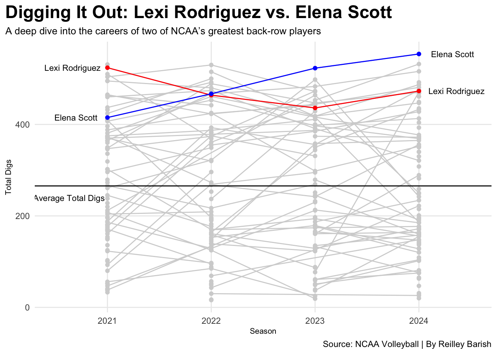
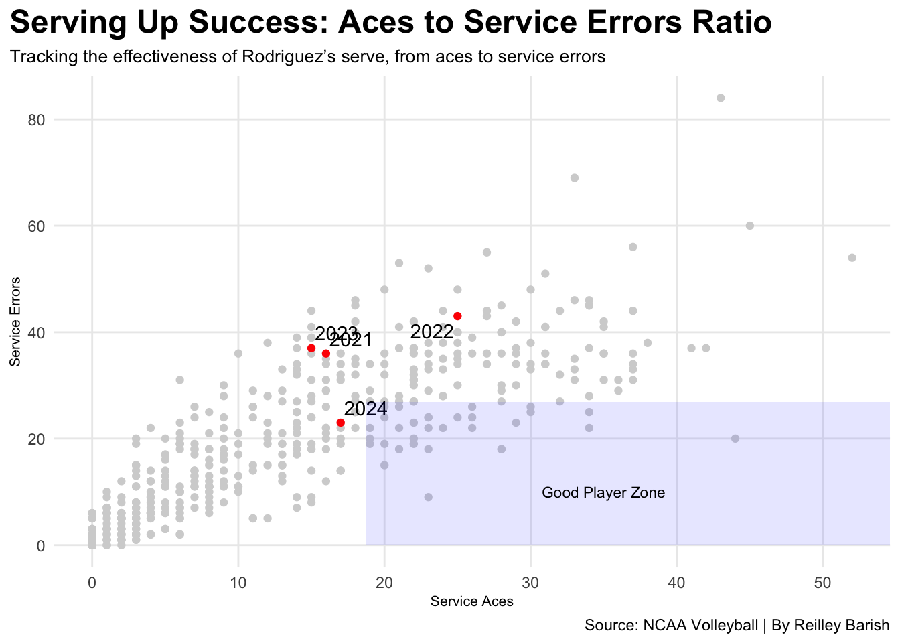

Lexi Rodriguez doesn’t just lead Nebraska’s defense, she has helped define it. Since stepping onto the court as a freshman, Rodriguez has put up numbers that not only top the team, but D1 NCAA volleyball.
Across four seasons, Rodriguez has racked up over 1,800 total career digs, consistently ranking among the NCAA’s best. Her out-of-system setting has quietly become one of Nebraska’s most reliable offensive transitions, and her aces-to-errors ratio proves how she is great player overall.
Rodriguez has become an household name in NCAA volleyball history with many accolades to back her success up:
AAU Sullivan Award Winner (2024-25)
AVCA National Player of the Year Finalist (2024)
Big Ten Medal of Honor (Nebraska, All Sports, 2025)
Nebraska Most Outstanding Female Student-Athlete (All-Sports, 2025)
Nebraska Female Athlete of the Year (2025)
AVCA All-America First Team (2021, 2023, 2024)
AVCA All-America Second Team (2022)
Academic All-America First Team (2023, 2024)
Academic All-America Third Team (2022)
AVCA National Freshman of the Year (2021)
AVCA Region Player of the Year (2024)
AVCA Region Freshman of the Year (2021)
AVCA All-Region Team (2021, 2022, 2023, 2024)
Big Ten Defensive Player of the Year (2021, 2023, 2024)
All-Big Ten First Team (2021, 2022, 2023, 2024)
Big Ten All-Freshman Team (2021)
Nebraska Female Newcomer of the Year (2021-22)
NCAA Lincoln Regional All-Tournament Team (2023, 2024)
Academic All-District (2022, 2023, 2024)
Academic All-Big Ten (2022, 2023, 2024; Beach-2022, 2023, 2024)
Nebraska Scholar-Athlete Honor Roll (Fall 2022, 2023, 2024; Spring 2021, 2023, 2024)
Tom Osborne Citizenship Team (2022, 2023, 2024)
Source: Huskers Lexi Rodriguez Bio
Rodriguez is clearly held and remembered in a high regard, but do her stats on court back up all these awards?
In this blog, the data used is from NCAA volleyball players stats and Nebraska Huskers volleyball digs records. We will break down the numbers behind her brilliance: season-by-season dig totals, ace-to-error ratios, assists, and more.
In the data, we will only focus on things important to libero and defensive specialist stats. This includes: digs, assists, sets played, position, aces, service errors, and return errors.
Rodriguez sets new standard for back-row excellence at Nebraska
Rank
Player Name
Total Career Digs
Years
1
Lexi Rodriguez
1,897
2021–24
2
Justine Wong-Orantes
1,890
2013–16
3
Kayla Banwarth
1,706
2007–10
4
Nicklin Hames
1,587
2018–22
5
Jennifer Saleaumua
1,568
2002–05
6
Jordan Larson
1,410
2005–08
7
Kenzie Maloney
1,406
2015–18
8
Hannah Werth
1,367
2009–12
9
Dani Busboom
1,281
2003–06
10
Kadie Rolfzen
1,255
2013–16
By: Reilley Barish | Source: 2025 Nebraska Volleyball Digs Records
The table above showcases Nebraska’s all-time leaders in career digs, with Lexi Rodriguez topping the list. Highlighted in red, Rodriguez stands out not only for her impressive total but for setting a new benchmark in back-row performance.
Rodriguez’s consistency and impact on the court is undeniable, with each season contributing to a legacy built on quick reflexes, smart positioning, and unmatched defensive instincts.
But to truly appreciate the arc of her performance over time, we need to see how she has improved or declined throughout her time at Nebraska.
Rodriguez’s dig totals tell a story of her consistent excellence. She started her college career in 2021 with an impressive 440 digs, immediately establishing herself as a defensive force. After 2021, opponent offensives started to ignore her and target others during serves because Rodriguez was just that good.
In 2022, she followed up with 415, demonstrating not just talent but consistency under pressure. Her junior year saw a slight dip to 398 which was still well above the NCAA average of 265 digs per season. She the finished out her senior year with a bounce-back performance, recording 435 digs.
Over four seasons, Rodriguez never fell below the 390-mark, a testament to her durability, skill, and central role in Nebraska’s defensive system. Her line on the slope chart doesn’t just rise and fall: it stays way above the average, proving her elite status among collegiate liberos.
Rodriguez was often compared and challenged against Louisville’s libero, Elena Scott. Elena Scott was the heartbeat of Louisville’s back court, anchoring the defense with sharp instincts and relentless hustle. As the Cardinals’ standout libero, she’s consistently among the nation’s leaders in digs, earning a reputation as one of the top defensive players in the NCAA.
Code
ggplot() +geom_line(data=ds, aes(x=season, y=digs, group=name), color="lightgrey") +geom_point(data=ds, aes(x=season, y=digs, group=name), color="lightgrey") +geom_line(data=lr, aes(x=season, y=digs, group=name), color="red") +geom_point(data=lr, aes(x=season, y=digs, group=name), color="red")+geom_line(data=es, aes(x=season, y=digs, group=name), color="blue") +geom_point(data=es, aes(x=season, y=digs, group=name), color="blue")+geom_text(data = lr |>filter(season ==min(season)), aes(x = season - .2, y=digs, label = name), size =3, hjust =0.75) +geom_text(data = lr |>filter(season ==max(season)), aes(x = season + .2, y=digs, label = name), size =3, hjust =0.2) +geom_text(data = es |>filter(season ==min(season)), aes(x = season - .2, y=digs, label = name), size =3, hjust =0.75) +geom_text(data = es |>filter(season ==max(season)), aes(x = season + .2, y=digs, label = name), size =3, hjust =0.2) +geom_hline(yintercept=265.55, color="black")+scale_x_continuous(breaks=c(2021, 2022, 2023, 2024), limits =c(2020.5, 2024.5)) +geom_text(aes(x=2020.63, y=240, label="Average Total Digs"), size=3)+labs(x="Season", y="Total Digs", title="Digging It Out: Lexi Rodriguez vs. Elena Scott", subtitle="A deep dive into the careers of two of NCAA’s greatest back-row players" ,caption="Source: NCAA Volleyball | By Reilley Barish" )+theme_minimal() + custheme

When comparing and contrasting Lexi Rodriguez and Elena Scott side by side, the numbers show a tight and compelling race throughout their four-year careers.
In 2021, Lexi tallied 440 digs, slightly ahead of Elena’s 415, giving Rodriguez the early edge. But in 2022, Scott surged ahead with 467 digs, outpacing Rodriguez’s 398 that year. The 2023 season Elena posted 523 digs, dominating and being the overall digs leader that season. However, Rodriguez answered back in 2024 with a standout 435 digs, though still trailing Scott’s career-high 554 that season.
Overall, Elena Scott’s rise as a back-row dominator and Lexi Rodriguez’s consistent performance over four years highlight their impressive careers. Their high rankings in single-season totals and their ability to consistently perform above the NCAA average are a testament to their elite status in defense. It’s interesting to see how both players made their mark in different ways with Scott’s rapid improvement each season and Rodriguez’s steadiness across her career.
They are both incredible leaders on and off the court but it takes more than just digs to be a good libero.
Code
ggplot() +geom_point(data=dsP5, aes(x=aces, y=s_err), color="lightgrey") +geom_point(data=lr21, aes(x=aces, y=s_err), color="red") +geom_text_repel(data=lr21, aes(x=aces, y=s_err, label="2021")) +geom_point(data=lr22, aes(x=aces, y=s_err), color="red") +geom_text_repel(data=lr22, aes(x=aces, y=s_err, label="2022")) +geom_point(data=lr23, aes(x=aces, y=s_err), color="red") +geom_text_repel(data=lr23, aes(x=aces, y=s_err, label="2023")) +geom_point(data=lr24, aes(x=aces, y=s_err), color="red") +geom_text_repel(data=lr24, aes(x=aces, y=s_err, label="2024")) +annotate("rect", fill ="blue", alpha =0.1, xmin =18.74333, xmax =Inf,ymin =0, ymax =26.94333) +geom_text(aes(x=35, y=10, label="Good Player Zone"), size=3)+labs(x="Service Aces", y="Service Errors", title="Serving Up Success: Aces to Service Errors Ratio", subtitle="Tracking the effectiveness of Rodriguez’s serve, from aces to service errors" ,caption="Source: NCAA Volleyball | By Reilley Barish" )+theme_minimal() + custheme

The data in the graph reveals a detailed picture of Lexi Rodriguez’s serving performance over the years, showing both her strengths and areas for improvement.
In 2021, 2022, and 2023, Rodriguez’s service errors were above the NCAA average, which indicates that while her serving was effective, it came with a higher risk of errors.
Specifically, in 2022, she recorded her highest number of service errors, but this was also the year where she registered the most service aces, suggesting that she was taking more risks with her serves in an effort to generate points.
However, in 2024, Rodriguez’s service errors dropped below the average, marking a significant improvement in her consistency.
Being a libero means having a good serve and being a well-rounded player wherever the team needs you. Rodriguez was consistent with her serve but she was not the best server out of all the liberos, constantly falling behind the average service errors and aces. While Rodriguez may not have been good in one area, she excelled in another.
Code
ggplot() +geom_bar(data=playersds, aes(x=reorder(name, totassists), weight=totassists), fill="grey") +geom_bar(data=lr, aes(x=reorder(name, assists), weight=assists), fill="red") +coord_flip()+labs(x="Players Name", y="Total Assists", title="Out of System, But Never Out of Options", subtitle="Lexi Rodriguez turns every broken play into a perfect opportunity" ,caption="Source: NCAA Volleyball | By Reilley Barish" )+theme_minimal() + custheme
Rodriguez is known as the out-of-system queen for a reason. Her assists stand out due to her consistency and ability to contribute significantly even in difficult, out-of-system situations. Her position on the chart demonstrates her importance in converting broken plays into scoring opportunities, a testament to her skill and vision on the court.
Despite being part of a highly competitive group, Rodriguez’s assists shows that she was a key player in creating successful plays, turning lost opportunities into meaningful contributions for her team. The chart underscores her role as a reliable setter who can maintain composure and precision, even when the team is out of system.
With the scatterplot above, we can see how Lexi was totally dominate, especially among her libero and defensive specialist peers.
Overall, Lexi Rodriguez is the best of the best. She had lead a team both on and off the court for four years, serving as a captain for two. She has set the standard of what a libero should look and play like. Lexi Rodriguez is now a household name for anyone in the volleyball sport and she has set a legacy and name for herself. Sitting at the top of Nebraska’s all-time career digs leader, her name is forever known as one of the greats.
Rodriguez is continuing her volleyball career in the pro volleyball world. She is apart of the LOVB Omaha team, with other huskers like Jordan Larson and Justine Wong-Orantes. She just finished up her rookie season finishing as the LOVB championhsip runner-ups. We can’t wait to see what else she gets to do now out of college.